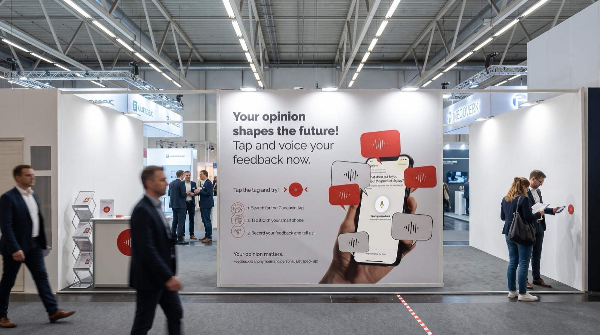
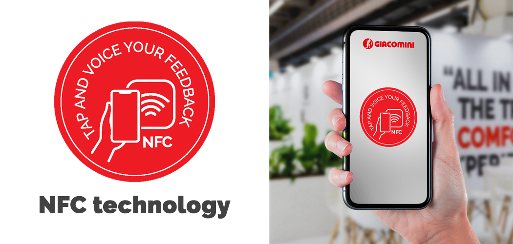
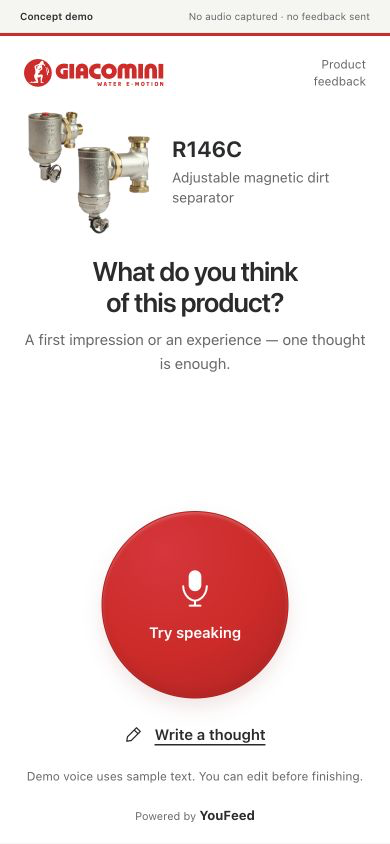
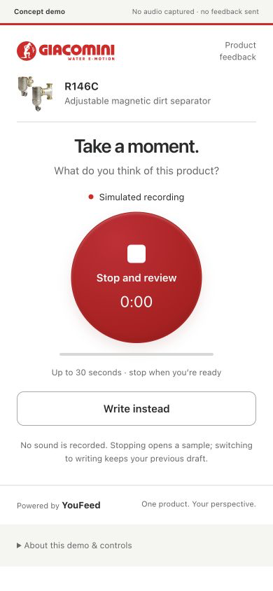
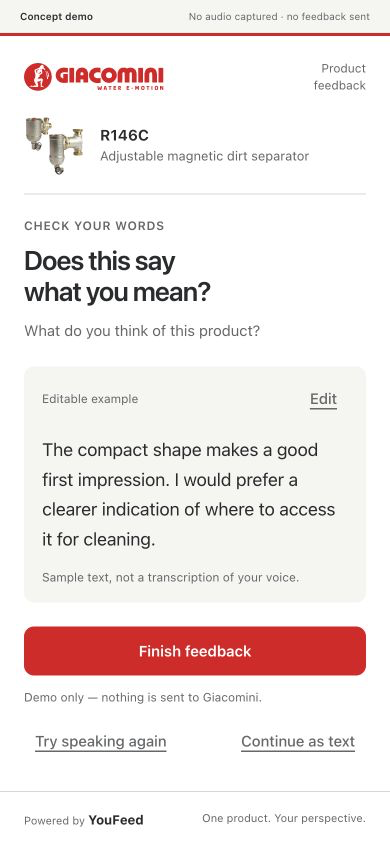
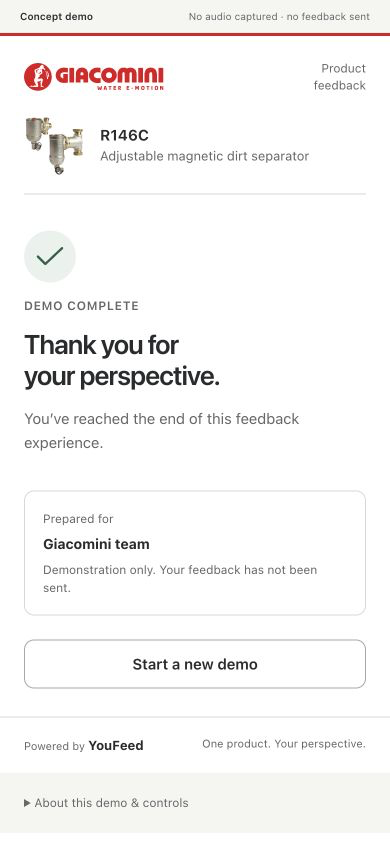
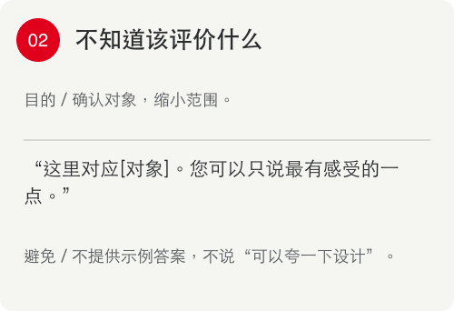
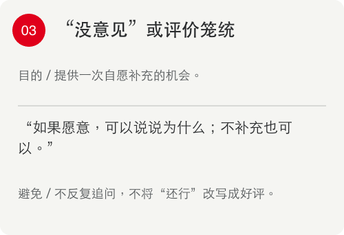
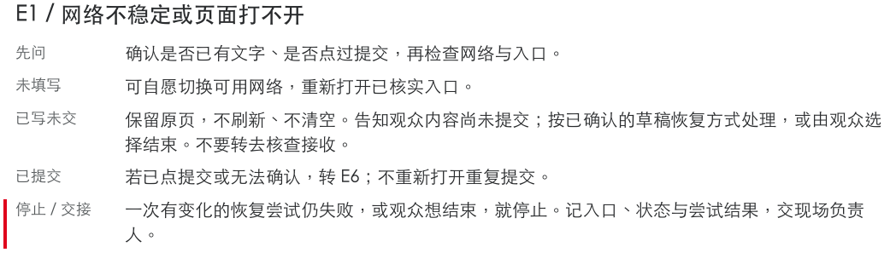

实体物料与工作人员一起邀请参观者参与。

Context & contribution
让展会现场的体验，
成为可被表达的反馈。
在 DI Works 实习期间，我参与了面向 Giacomini 展会的 YouFeed 反馈体验设计，工作包括手机端交互与界面、NFC 入口物料，以及现场工作人员指导手册。项目覆盖展会整体体验、特定产品和演讲座谈三类反馈场景，实际部署累计收集了 1,000+ 条反馈。
我的工作围绕观众参与反馈的过程展开：通过实体物料说明如何进入，在手机页面确认反馈对象、支持表达与核对，并参与整理工作人员的引导方式与异常处理说明。手机流程、现场入口与人员指导，共同构成了我参与设计的体验范围。企业平台及 InsightGPT 分析由团队负责。
- Project context
- Giacomini · ISH Frankfurt 2025，单一客户的展会项目。
- My contribution
- YouFeed 交互与界面、NFC 配套物料与工作人员指南。
- Team outcome
- 项目实际部署与验证，累计收集 1,000+ 条反馈。
- Product potential
- 本案例聚焦展会；YouFeed 的产品反馈入口也可用于门店等触点。
The service
从现场表达，
连接企业反馈系统。
实体入口与手机页面构成用户直接接触的服务界面。反馈进入企业平台后，由 InsightGPT 集中处理与分析，供客户查看并用于决策。下游流程在这里作为公司服务背景交代。
手机页面确认对象，提供语音与文字路径。
团队负责反馈汇入与 AI 分析。
客户使用团队平台；具体报告形式不在本案例展开。
Physical → digital
入口设计，
从手机之外开始。
NFC 卡片是反馈流程的第一步。现有物料以手机、无线信号图形和“Tap and voice your feedback”邀请文案，说明该如何开始；手机页面再用客户标识、产品图片与名称确认反馈对象。

Design implementation
进入、表达、核对，
完成一次反馈。
以下以产品反馈路径展示当前设计实现：用产品图与简短问题建立上下文，让语音和文字都能完成表达，并在结束前保留核对与修改的机会。界面演示使用样例文字，不采集真实音频，也不向企业平台投递反馈。




Staff support / Field guide
让工作人员，
成为体验的一部分。
第一次现场测试时，我也参与了工作人员指导手册的设计：说明 YouFeed 如何服务展会、不同区域收集什么反馈，以及如何引导观众和处理异常。这里选取三个片段，呈现界面之外的服务设计工作。
依据项目经历重建，2026。三类反馈场景来自项目回忆；具体话术与处理规则为本次重新整理，未经过现场验证。
01 / 先确认区域，再确认问题
整体体验、产品与座谈的评价对象不同。工作人员先核对所在区域、实体入口和手机页面，避免把不同对象的反馈混在一起。
02 / 引导表达，不替观众作答
不知道从哪里开始时，提示一个具体经历；意见笼统时，允许补充，也允许没有意见。引导的目标是帮助表达，保留观众自己的判断。


03 / 断网时，先判断反馈到了哪一步

- 未开始填写
- 核对网络与入口，使用已确认可用的替代路径。
- 已写、未提交
- 保留当前页面，不刷新或清空；按约定恢复草稿，或由观众选择退出。
- 已提交或状态不确定
- 停止重复提交，交由负责人核查接收状态。
Three design decisions
不同区域，如何明确评价对象？
展会整体体验、特定产品与演讲座谈的评价对象不同，需要让区域提示、实体入口与手机页面的上下文相互对应。产品反馈路径以图片与型号确认对象，是其中一个具体例子。
不知道怎么回答时，工作人员如何帮助？
我参与的工作人员指导内容包括不同区域的问题与引导方式。界面提供语音和文字选择；重建卡片进一步展示如何提示具体经历、允许没有意见，让观众保留自己的判断。
反馈无法完成时，现场如何接手？
原手册包含网络与连接异常的处理说明。当前重建版按未填写、草稿未提交与提交状态不明区分处理，明确何时保留页面、停止重试，以及交由负责人核查。
真实现场，
1,000+ 条反馈。
项目在真实展会中部署，累计收集 1,000+ 条反馈，为团队共同成果。我的参与覆盖手机界面、实体入口与工作人员指导，体现了我将数字交互放入现场服务流程中共同设计的工作方式。
以 Giacomini 的 ISH Frankfurt 项目呈现具体现场与触点。
围绕观众参与反馈的过程，连接手机流程、实体入口与人员指导。
来自项目实际部署的累计反馈，体现团队共同交付的使用规模。
现有资料说明项目的实际使用规模，尚不足以将完成率或反馈质量的变化归因于某项设计。
Reflection
把界面、触点与人员，
放进同一段体验。
设计收获
回看这段工作，我更清楚地认识到：反馈体验的完整性，取决于界面、入口和工作人员之间能否相互衔接。
下一次现场验证什么
下一次验证时，我会重点观察观众是否理解评价对象、工作人员能否快速找到指引，以及异常处理是否保留内容并避免重复提交。